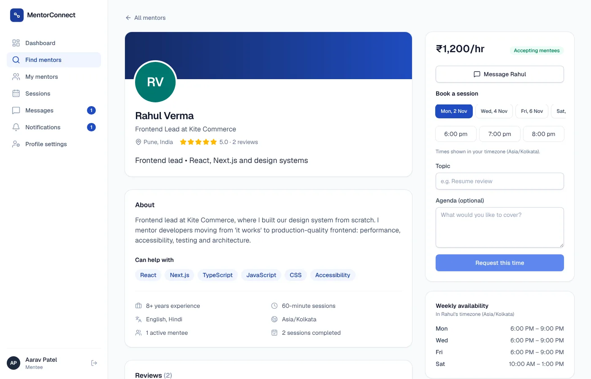
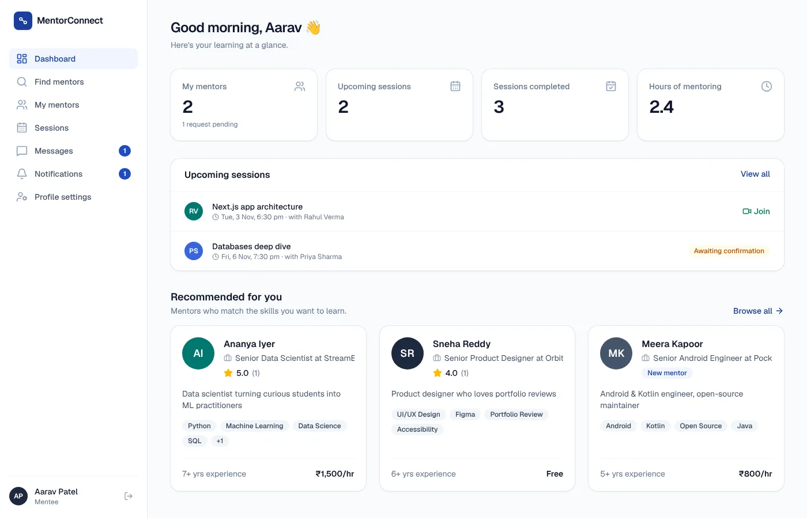
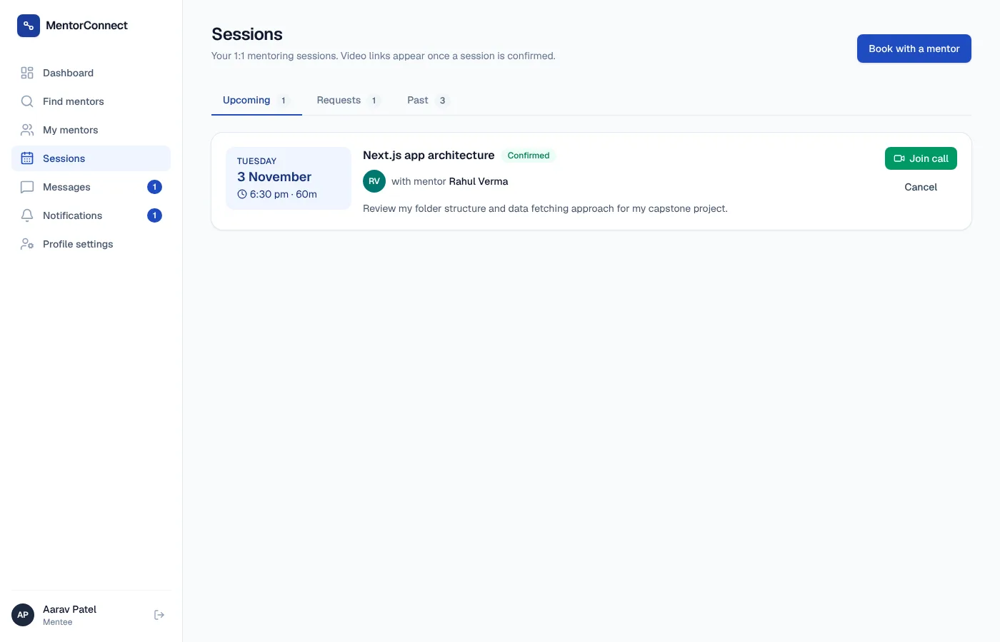

One journey: discover, request, book, meet, review.
MentorConnect is a mentorship platform for students and early-career learners. Mentees search for a mentor, send a request, book a one-to-one session from the mentor's real availability, join a video call, chat between sessions and leave a review. Mentors manage requests and availability. Admins keep the platform safe.
The product went through two versions. The first was built in PHP and MySQL. It was then rebuilt on Next.js and PostgreSQL, keeping the same core journey, and that version is the one running as the live demo.
Concept to first working version.
My work
- Shaped the product concept: who the platform serves and the journey from finding a mentor to reviewing a session.
- Defined the requirements and core user flows for mentees, mentors and admins.
- Designed the user interface and experience.
- Built the first working prototype in PHP and MySQL, which set the feature scope for the version that followed.
Team work
Teammate Shubham Kumar Singh rebuilt the product on Next.js and PostgreSQL, added the automated tests and deployed the live demo.
Mentorship is valuable but hard to organize.
A learner who wants guidance has to find a relevant mentor, reach out without knowing if they are open to it, agree a time across time zones and keep the conversation going afterwards. Each step happens in a different tool, and there is no shared way to judge whether a mentor is a good fit.
Make the path from "I need guidance" to a booked, reviewed session one continuous journey.
A two-sided platform, plus the people who run it.
| User | Goal | Pain point the product addresses |
|---|---|---|
| Mentee | Find the right mentor and get regular time with them | No easy way to search by skill or company, or to see when a mentor is free |
| Mentor | Help people without losing control of their time | Requests arrive anywhere; scheduling across time zones is manual |
| Admin | Keep the platform trustworthy | Needs to see activity and remove bad actors quickly |
Decisions, requirements and rules.
Product objective
Get a mentee from search to a completed, reviewed session with as little back and forth as possible, while giving mentors control over their time.
Key decisions
Request before booking
Journey design- Decision
- A mentee sends a request with a message; only after the mentor accepts can sessions be booked.
- Why
- Mentors keep control over who they work with, and bookings only happen inside an agreed relationship.
Book from real availability
Scheduling- Decision
- Mentors set weekly availability in their own time zone; mentees see open slots in theirs, and booked slots are hidden.
- Why
- Removes the back-and-forth over times, across time zones.
Reviews you can trust
Trust and quality- Decision
- Only a mentee who attended a completed session can review it.
- Why
- Ratings drive mentor choice, so they must come from real sessions, not from anyone with an account.
Ship the journey first, upgrade later
Scope- Decision
- Chat checks for new messages every few seconds rather than using a real-time service; payments and email reminders are listed as later upgrades.
- Why
- The core journey works end to end without extra paid services, and the upgrades can be added when there are enough users to justify them.
Scope: delivered and deferred
| Feature | Status |
|---|---|
| Accounts, roles, email verification and password reset | Live |
| Onboarding and profiles (skills, goals, time zone; mentor role, company, rate, languages) | Live |
| Mentor directory with search, filters and sorting | Live |
| Requests, scheduling, sessions with an automatic video link | Live |
| Messaging, reviews, notifications, dashboards, admin panel | Live |
| Real-time chat instead of polling | Later upgrade |
| Email notifications for bookings and messages | Later upgrade |
| Payments for paid sessions | Later upgrade |
Business problem
A mentorship program only works if mentees can find mentors, sessions actually happen and quality is visible. The platform needs clear roles, a controlled workflow from request to session, and rules that keep bookings and reviews reliable.
Stakeholders and roles
| Role | Can do | Key rule |
|---|---|---|
| Mentee | Search mentors, send requests, book, cancel, chat, review completed sessions | Can only review sessions they attended |
| Mentor | Accept or decline requests, set availability, confirm or decline sessions, chat | Each open slot can be booked only once |
| Admin | See platform stats, search users, suspend or reactivate accounts | Suspending a user signs them out everywhere |
Functional workflow
Business rules
Retrospective analysis of the live version, based on the repository. Not an original requirements document.
| ID | Rule | Why it matters |
|---|---|---|
| BR-1 | Sessions can only be booked inside an accepted mentorship | Mentors control who takes their time |
| BR-2 | A slot can be booked once, even if two mentees try at the same instant | No double bookings |
| BR-3 | Only a mentee who attended a completed session can review it | Ratings stay trustworthy |
| BR-4 | Verification links expire in 24 hours and reset links in 1 hour | Account security |
| BR-5 | The forgot-password form never reveals whether an email is registered | User privacy |
| BR-6 | Suspending a user or resetting a password signs them out on every device | Admin actions take effect immediately |
Non-functional requirements
- Passwords hashed; sessions stored in the database; private pages redirect signed-out visitors to login.
- Works on phones as well as desktops.
- Times shown in each user's own time zone.
Validation
The end-to-end tests check the workflow and rules directly: request, accept, book, confirm and join; two mentees racing for the same slot; chat delivery; sign-up, verification and password reset; and that the forgot-password form gives nothing away.
Two versions, one journey.
| First version | Live version | |
|---|---|---|
| Stack | PHP, MySQL, HTML, CSS, JavaScript | Next.js, TypeScript, PostgreSQL, Prisma, Tailwind CSS |
| Purpose | Prove the concept and the core flows | Production release with tests and CI |
| Built by | Me | Shubham Kumar Singh |
| Repository | PrachiYadav-16/mentorconnect | shubhamrajput27/mentorconnect |
The live version runs on Vercel with a Neon PostgreSQL database. Each session gets a Jitsi video link automatically, and emails for verification and password resets are sent through Resend.



Screens from the live version running locally with the app's built-in demo accounts. Names and numbers are demo data.
Tested where it could break.
- 12 unit tests for time zone handling and input validation.
- 9 end-to-end browser tests, including the full request-to-call journey, double booking, chat between two users, photo upload, admin suspension and the mobile menu.
- A CI pipeline runs lint, type check, unit tests, build and end-to-end tests on every change.
What came out of it.
The full mentorship journey is live as a public demo with seeded mentor and mentee accounts. It has not been launched to real users, so there are no adoption numbers to report.
What I learned
- A first prototype is a tool for deciding scope. Building it made it clear which flows were essential and which could wait.
- Trust rules, like who may leave a review, are product decisions as much as technical ones.
Where it could go next.
- Real-time chat, and email reminders for bookings and messages.
- Payments for paid sessions.
- Pilot with a college mentoring program to measure request acceptance and session completion rates.